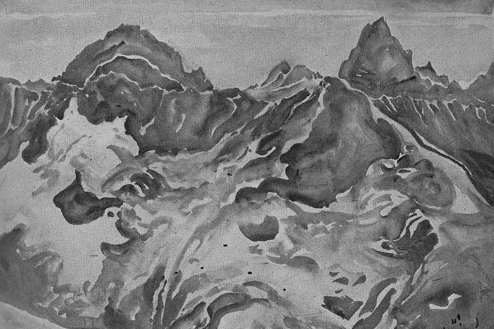
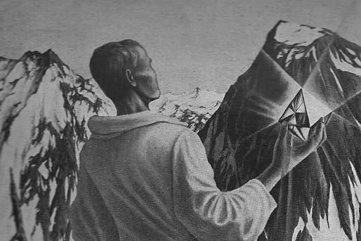

Durante el otoño del año 1827, mientras residía cerca de Charlottesville (Virginia), trabé relación por casualidad con Mr. Augustus Bedloe. Este joven caballero era notable en todo sentido y despertó en mí un interés y una curiosidad profundos. Me resultaba imposible comprenderlo tanto en lo físico como en lo moral. De su familia no pude obtener informes satisfactorios. Nunca averigüé de dónde venía. Aun en su edad -si bien lo califico de joven caballero- había algo que me desconcertaba no poco. Seguramente parecía joven, y se complacía en hablar de su juventud; mas había momentos en que no me hubiera costado mucho atribuirle cien años de edad. Pero nada más peculiar que su apariencia física. Era singularmente alto y delgado, muy encorvado. Tenía miembros excesivamente largos y descarnados, la frente ancha y alta, la tez absolutamente exangüe, la boca grande y flexible, y los dientes más desparejados, aunque sanos, que jamás he visto en una cabeza humana. La expresión de su sonrisa, sin embargo, en modo alguno resultaba desagradable, como podía suponerse; pero era absolutamente invariable. Tenía una profunda melancolía, una tristeza uniforme, constante. Sus ojos eran de tamaño anormal, grandes y redondos, como los del gato. También las pupilas con cualquier aumento o disminución de luz sufrían una contracción o una dilatación como la que se observa en la especie felina. En momentos de excitación le brillaban los ojos hasta un punto casi inconcebible; parecían emitir rayos luminosos, no de una luz reflejada, sino intrínseca, como una bujía, como el sol; pero por lo general tenía un aspecto tan apagado, tan velado y opaco, que evocaban los ojos de un cadáver largo tiempo enterrado.
Estas características físicas parecían causarle mucha molestia y continuamente aludía a ellas en un tono en parte explicativo, en parte de disculpa, que la primera vez me impresionó penosamente. Pronto, sin embargo, me acostumbré a él y mi incomodidad se desvaneció. Parecía proponerse más bien insinuar, sin afirmarlo de modo directo, que su aspecto físico no había sido siempre el de ahora, que una larga serie de ataques neurálgicos lo habían reducido de una belleza mayor de la común a eso que ahora yo contemplaba. Hacía mucho tiempo que le atendía un médico llamado Templeton, un viejo caballero de unos setenta años, a quien conociera en Saratoga y cuyos cuidados le habían proporcionado, o por lo menos así lo pensaba, gran alivio. El resultado fue que Bedloe, hombre rico, había hecho un arreglo con el doctor Templeton, por el cual este último, mediante un generoso pago anual, consintió en consagrar su tiempo y su experiencia médica al cuidado exclusivo del enfermo.
El doctor Templeton había viajado mucho en sus tiempos juveniles, y en París se convirtió, en gran medida, a las doctrinas de Mesmer. Por medio de curas magnéticas había logrado aliviar los agudos dolores de su paciente, que, movido por este éxito, sentía cierto grado natural de confianza en las opiniones en las cuales se fundaba el tratamiento. El doctor, sin embargo, como todos los fanáticos, había luchado encarnizadamente por convertir a su discípulo, y al fin consiguió inducirlo a que se sometiera a numerosos experimentos. Con la frecuente repetición de éstos logró un resultado que en los últimos tiempos se ha vulgarizado hasta el punto de llamar poco o nada la atención, pero que en el período al cual me refiero era apenas conocido en América. Quiero decir que entre el doctor Templeton y Bedloe se había establecido poco a poco un rapport muy definido y muy intenso, una relación magnética. No estoy en condiciones de asegurar, sin embargo, que este rapport se extendiera más allá de los límites del simple poder de provocar sueño; pero el poder en sí mismo había alcanzado gran intensidad. El primer intento de producir somnolencia magnética fue un absoluto fracaso para el mesmerista. El quinto o el sexto tuvo un éxito parcial, conseguido después de largo y continuado esfuerzo. Sólo en el duodécimo el triunfo fue completo. Después de éste la voluntad del paciente sucumbió rápidamente a la del médico, de modo que, cuando los conocí, el sueño se producía casi de inmediato por la simple voluntad del operador, aun cuando el enfermo no estuviera enterado de su presencia. Sólo ahora, en el año 1845, cuando se comprueban diariamente miles de milagros similares, me atrevo a referir esta aparente imposibilidad como un hecho tan cierto como probado.
El temperamento de Bedloe era sensitivo, excitable y exaltado en el más alto grado. Su imaginación se mostraba singularmente vigorosa y creadora, y sin duda sacaba fuerzas adicionales del uso habitual de la morfina, que ingería en gran cantidad y sin la cual le hubiera resultado imposible vivir. Era su costumbre tomar una dosis muy grande todas las mañanas inmediatamente después del desayuno, o más bien después de una taza de café cargado, pues no comía nada antes de mediodía, y luego salía, solo o acompañado por un perro, en un largo paseo por la cadena de salvajes y sombrías colinas que se alzan hacia el suroeste de Charlottesville y son honradas con el título de Montañas Escabrosas.
Un día oscuro, caliente, neblinoso de fines de noviembre, durante el extraño interregno de las estaciones que en Norteamérica se llama verano indio, Mr. Bedloe partió, como de costumbre, hacia las colinas. Transcurrió el día, y no volvió.
A eso de las ocho de la noche, ya seriamente alarmados por su prolongada ausencia, estábamos a punto de salir en su busca, cuando apareció de improviso, en un estado no peor que el habitual, pero más exaltado que de costumbre. Su relato de la expedición y de los acontecimientos que lo habían detenido fue en verdad singular.
«-Recordarán ustedes -dijo- que eran alrededor de las nueve de la mañana cuando salí de Charlottesville. De inmediato dirigí mis pasos hacia las montañas y, a eso de las diez, entré en una garganta completamente nueva para mí. Seguí los recodos de este paso con gran interés. El paisaje que se veía por doquiera, aunque apenas digno de ser llamado imponente, presentaba un indescriptible y para mí delicioso aspecto de lúgubre desolación. La soledad parecía absolutamente virgen. No pude menos de pensar que aquel verde césped y aquellas rocas grises nunca habían sido holladas hasta entonces por pies humanos. Tan absoluto era su apartamiento y en realidad tan inaccesible -salvo por una serie de accidentes- la entrada del barranco, que no es nada imposible que yo haya sido el primer aventurero, el primerísimo y único aventurero que penetró en sus reconditeces.
»La espesa y peculiar niebla o humo que caracteriza al verano indio y que ahora flota, pesada, sobre todos los objetos, servía sin duda para ahondar la vaga impresión que esos objetos creaban. Tan densa era esta agradable bruma, que en ningún momento pude ver a más de doce yardas en el sendero que tenía delante. Este sendero era sumamente sinuoso y, como no se podía ver el sol, pronto perdí toda idea de la dirección en que andaba. Entre tanto la morfina obró su efecto acostumbrado: el de dotar a todo el mundo exterior de intenso interés. En el temblor de una hoja, en el matiz de una brizna de hierba, en la forma de un trébol, en el zumbido de una abeja, en el brillo de una gota de rocío, en el soplo del viento, en los suaves olores que salían del bosque había todo un universo de sugestión, una alegre y abigarrada serie de ideas fragmentarias desordenadas.
 